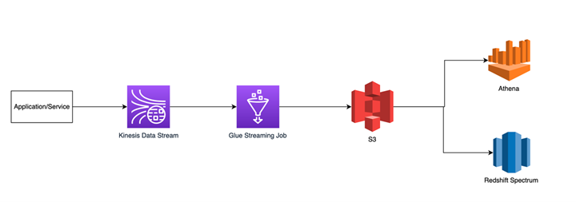

AWS Project
Problem Statement
Customers were lacking a way to access near real-time data, resulting in delays of approximately 2-4 hours. As part of the project, our objective was to enable near real-time processing and transformation of case data, making it consumable by customers within a 15-30 minute timeframe (reducing the previous delay). An illustrative use case example involved the WFM (Work Force Management) and OPS (Operations) teams, who continuously monitored the AWS case queue backlog, analyzed trends, and provided recommendations to address specific cases. They also tracked volume drivers for the day and utilized real-time updates to plan and adjust workloads. Existing manual processes and unauthorized methods, such as scraping the case console, caused delays in decision-making and potentially impacted AWS support customers.
Scope
The project's scope was to reduce the data freshness Service Level Agreement (SLA) to an impressive 15 minutes for end customers, with a specific focus on the WFM team as an example use case. The project involved designing a robust pipeline that effectively reduced the time required for data ingestion and transformation, ensuring compliance with the 15-minute data freshness SLA. Moreover, the solution was designed to be generic, enabling seamless onboarding of other data sources within a single day. A scalable architecture was implemented to facilitate future self-service capabilities, complemented by a user-friendly interface (UI) to enhance usability and accessibility.
High Level Design
While the previous description provides a high-level overview, it is important to note that detailed low-level designs were undertaken to ensure the solution's adaptability across multiple applications. The goal was to generalize the solution, making it scalable and applicable to any number of applications. These meticulous low-level design efforts allowed for flexibility and robustness, accommodating diverse use cases and maximizing the solution's effectiveness across various scenarios.
End Result